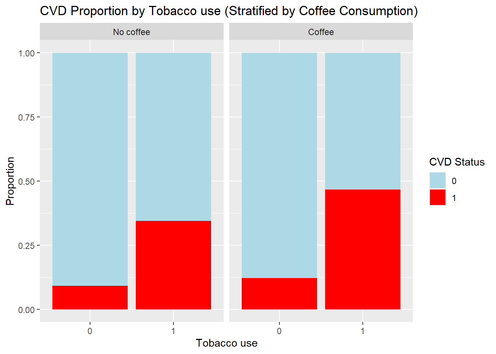

Identifying and addressing confounding in observational data
Published
October 23, 2024
Dummy dataset
To demonstrate confounding in the relationship between coffee consumption and cardiovascular disease (CVD), using tobacco as a confounder, we first generate a dummy dataset with three variables: coffee consumption, CVD status, and tobacco use. We will assume that tobacco use affects both coffee consumption and the likelihood of CVD.
# Settingsset.seed(123) # for reproducibilityn <-500# number of iterations# Generate tobacco use (confounder)tobacco <-rbinom(n, 1, 0.4) # 40% smokers# Generate coffee consumption based on tobacco use (confounder effect)# Smokers are more likely to drink coffeecoffee <-rbinom(n, 1, prob =0.2+0.5* tobacco) # Generate CVD based on tobacco use and coffee consumption# Tobacco is a stronger predictor of CVDCVD <-rbinom(n, 1, prob =0.1+0.3* tobacco +0.05* coffee)# Create the data framedata <-data.frame(coffee, tobacco, CVD)# Examine the first few rows of the datasethead(data)
To visually check for confounding in the relationship between coffee consumption and cardiovascular disease (CVD), we can use several types of plots in R. These plots help illustrate how the confounder (tobacco) influences both the exposure (coffee consumption) and the outcome (CVD).
Correlation heatmap
The pairwise correlations between the variables can be visualised in a heatmap:
Coffee and Tobacco have a moderate positive correlation, as expected, since smokers are more likely to drink coffee in this simulated dataset.
Tobacco and CVD show a stronger positive correlation, reflecting that smoking increases the risk of cardiovascular disease.
Coffee and CVD have a weaker positive correlation, which may be confounded by tobacco use.
# Load the required packagelibrary(ggcorrplot)
Loading required package: ggplot2
# Compute the correlation matrixcorr_matrix <-cor(data)# Plot the correlation heatmapggcorrplot( corr_matrix, method ="circle",lab =TRUE, title ="Correlation Matrix: Coffee, Tobacco, and CVD")
Scatterplot with Grouping (Exposure vs. Outcome with Confounder Grouping)
A scatterplot or barplot that groups the data by the confounder (tobacco) can visually show the confounding effect. In this case, we can plot the relationship between coffee and CVD, with separate lines or bars for smokers and non-smokers.
library(ggplot2)# Create a bar plot showing CVD rate by coffee consumption, stratified by tobacco useggplot(data, aes(x =factor(coffee), fill =factor(CVD))) +geom_bar(position ="fill") +facet_wrap(~ tobacco, labeller =labeller(tobacco =c("0"="Non-smokers", "1"="Smokers"))) +labs(x ="Coffee Consumption", fill ="CVD Status", y ="Proportion") +scale_fill_manual(values =c("0"="lightblue", "1"="red")) +ggtitle("CVD Proportion by Coffee Consumption (Stratified by Tobacco Use)")
This plot shows how the relationship between coffee and CVD changes when stratified by tobacco use. If there is confounding, the relationship between coffee and CVD should look different for smokers and non-smokers.
Mosaic Plot (CVD by Coffee and Tobacco)
A mosaic plot helps visualize the relationship between two categorical variables (coffee and CVD) while considering a third categorical variable (tobacco). It is a good way to see if the distribution of CVD cases changes with tobacco use.
# Create a mosaic plot to visualize the relationship between coffee, tobacco, and CVDmosaicplot(~ coffee + CVD + tobacco, data = data, color =TRUE,main ="Mosaic Plot of Coffee, CVD, and Tobacco",xlab ="Coffee Consumption", ylab ="CVD Status")

This mosaic plot helps identify if tobacco modifies the association between coffee and CVD. You can see if the size and color pattern of the boxes vary between smokers and non-smokers.
Interaction Plot (Coffee, CVD, and Tobacco)
An interaction plot can help visually assess whether there is an interaction effect between coffee consumption and tobacco use on the likelihood of CVD. It shows the predicted probabilities or the mean CVD rate across different groups.
# Calculate mean CVD rate by coffee and tobacco groupsmean_cvd <-aggregate(CVD ~ coffee + tobacco, data = data, FUN = mean)# Interaction plotggplot(mean_cvd, aes(x =factor(coffee), y = CVD, color =factor(tobacco), group = tobacco)) +geom_line(linewidth =1.2) +geom_point(linewidth =3) +labs(x ="Coffee Consumption", y ="Mean CVD Rate", color ="Tobacco Use") +ggtitle("Interaction Plot: Coffee Consumption, Tobacco, and Mean CVD Rate")
Warning in geom_point(linewidth = 3): Ignoring unknown parameters: `linewidth`
This plot illustrates how the relationship between coffee consumption and CVD varies by tobacco use. If tobacco is a confounder, the slopes for smokers and non-smokers should differ, suggesting that the effect of coffee on CVD is not the same for both groups.
Model-based identification of confounding
We can analyze the relationship between coffee and CVD without adjusting for tobacco use and then include tobacco use to observe its confounding effect.
First, we can see if there is a relationship between coffee consumption and CVD without considering tobacco as a confounder.
# Unadjusted model (coffee vs CVD)unadjusted_model <-glm(CVD ~ coffee, data = data, family ="binomial")summary(unadjusted_model)
Call:
glm(formula = CVD ~ coffee, family = "binomial", data = data)
Coefficients:
Estimate Std. Error z value Pr(>|z|)
(Intercept) -1.8036 0.1665 -10.83 < 2e-16 ***
coffee 1.2051 0.2219 5.43 5.64e-08 ***
---
Signif. codes: 0 '***' 0.001 '**' 0.01 '*' 0.05 '.' 0.1 ' ' 1
(Dispersion parameter for binomial family taken to be 1)
Null deviance: 536.85 on 499 degrees of freedom
Residual deviance: 506.09 on 498 degrees of freedom
AIC: 510.09
Number of Fisher Scoring iterations: 4
This will give us the log odds ratio for the effect of coffee consumption on CVD without considering tobacco.
Now, we adjust for tobacco use to see if the relationship between coffee and CVD changes after accounting for the confounder.
# Adjusted model (coffee vs CVD, adjusting for tobacco)adjusted_model <-glm(CVD ~ coffee + tobacco, data = data, family ="binomial")summary(adjusted_model)
Call:
glm(formula = CVD ~ coffee + tobacco, family = "binomial", data = data)
Coefficients:
Estimate Std. Error z value Pr(>|z|)
(Intercept) -2.3239 0.2057 -11.298 < 2e-16 ***
coffee 0.4377 0.2582 1.696 0.09 .
tobacco 1.7344 0.2666 6.507 7.68e-11 ***
---
Signif. codes: 0 '***' 0.001 '**' 0.01 '*' 0.05 '.' 0.1 ' ' 1
(Dispersion parameter for binomial family taken to be 1)
Null deviance: 536.85 on 499 degrees of freedom
Residual deviance: 459.82 on 497 degrees of freedom
AIC: 465.82
Number of Fisher Scoring iterations: 4
By comparing the coefficients in both models, we can observe the confounding effect of tobacco on the coffee-CVD relationship.
Approaches to Handle Confounding
Stratification by tobacco use
We can stratify the analysis by tobacco use to compare the effect of coffee on CVD within each group (smokers and non-smokers).
# Stratified analysis for non-smokersnon_smokers <-subset(data, tobacco ==0)strat_model_ns <-glm(CVD ~ coffee, data = non_smokers, family ="binomial")summary(strat_model_ns)
Call:
glm(formula = CVD ~ coffee, family = "binomial", data = non_smokers)
Coefficients:
Estimate Std. Error z value Pr(>|z|)
(Intercept) -2.2889 0.2237 -10.230 <2e-16 ***
coffee 0.3079 0.4385 0.702 0.483
---
Signif. codes: 0 '***' 0.001 '**' 0.01 '*' 0.05 '.' 0.1 ' ' 1
(Dispersion parameter for binomial family taken to be 1)
Null deviance: 196.09 on 304 degrees of freedom
Residual deviance: 195.62 on 303 degrees of freedom
AIC: 199.62
Number of Fisher Scoring iterations: 5
# Stratified analysis for smokerssmokers <-subset(data, tobacco ==1)strat_model_sm <-glm(CVD ~ coffee, data = smokers, family ="binomial")summary(strat_model_sm)
Call:
glm(formula = CVD ~ coffee, family = "binomial", data = smokers)
Coefficients:
Estimate Std. Error z value Pr(>|z|)
(Intercept) -0.6419 0.2763 -2.323 0.0202 *
coffee 0.5103 0.3250 1.570 0.1164
---
Signif. codes: 0 '***' 0.001 '**' 0.01 '*' 0.05 '.' 0.1 ' ' 1
(Dispersion parameter for binomial family taken to be 1)
Null deviance: 266.58 on 194 degrees of freedom
Residual deviance: 264.06 on 193 degrees of freedom
AIC: 268.06
Number of Fisher Scoring iterations: 4
Regression adjustment
As done earlier, logistic regression models can adjust for tobacco use. This method is often more convenient than stratification.
# The adjusted model shown earlier adjusts for tobacco usesummary(adjusted_model)
Call:
glm(formula = CVD ~ coffee + tobacco, family = "binomial", data = data)
Coefficients:
Estimate Std. Error z value Pr(>|z|)
(Intercept) -2.3239 0.2057 -11.298 < 2e-16 ***
coffee 0.4377 0.2582 1.696 0.09 .
tobacco 1.7344 0.2666 6.507 7.68e-11 ***
---
Signif. codes: 0 '***' 0.001 '**' 0.01 '*' 0.05 '.' 0.1 ' ' 1
(Dispersion parameter for binomial family taken to be 1)
Null deviance: 536.85 on 499 degrees of freedom
Residual deviance: 459.82 on 497 degrees of freedom
AIC: 465.82
Number of Fisher Scoring iterations: 4
G-computation
G-computation (or the G-formula) is a causal inference method derived from the counterfactual framework, often used to estimate the causal effect of an exposure on an outcome, adjusting for confounders. G-computation models the outcome (e.g., cardiovascular disease, CVD) under different hypothetical scenarios of the exposure (e.g., coffee consumption) and then averages these over the distribution of confounders (e.g., tobacco use).
The G-formula provides a direct way to adjust for confounding by estimating the expected outcome for both treated and untreated groups if everyone in the population had the same level of exposure, regardless of their actual exposure.
Steps for G-Computation:
Fit an outcome model: Model the relationship between the confounder (tobacco), the exposure (coffee), and the outcome (CVD).
Predict counterfactual outcomes: Use the model to predict the probability of CVD for everyone in the dataset assuming two different scenarios:
Everyone drank coffee (coffee = 1).
No one drank coffee (coffee = 0).
Estimate the causal effect: Compare the average predicted outcomes under the two scenarios to estimate the causal effect of coffee consumption on CVD.
# Fit a logistic regression model for the outcomeoutcome_model <-glm(CVD ~ coffee + tobacco, data = data, family = binomial)summary(outcome_model)
Call:
glm(formula = CVD ~ coffee + tobacco, family = binomial, data = data)
Coefficients:
Estimate Std. Error z value Pr(>|z|)
(Intercept) -2.3239 0.2057 -11.298 < 2e-16 ***
coffee 0.4377 0.2582 1.696 0.09 .
tobacco 1.7344 0.2666 6.507 7.68e-11 ***
---
Signif. codes: 0 '***' 0.001 '**' 0.01 '*' 0.05 '.' 0.1 ' ' 1
(Dispersion parameter for binomial family taken to be 1)
Null deviance: 536.85 on 499 degrees of freedom
Residual deviance: 459.82 on 497 degrees of freedom
AIC: 465.82
Number of Fisher Scoring iterations: 4
# Create a copy of the data with coffee set to 1 (everyone drinks coffee)data_coffee1 <- datadata_coffee1$coffee <-1# Predict the probability of CVD for everyone if all drank coffeepred_coffee1 <-predict(outcome_model, newdata = data_coffee1, type ="response")# Create a copy of the data with coffee set to 0 (no one drinks coffee)data_coffee0 <- datadata_coffee0$coffee <-0# Predict the probability of CVD for everyone if no one drank coffeepred_coffee0 <-predict(outcome_model, newdata = data_coffee0, type ="response")# Calculate the mean predicted probability of CVD under both scenariosmean_pred_coffee1 <-mean(pred_coffee1)mean_pred_coffee0 <-mean(pred_coffee0)# Calculate the average causal effect (risk difference)causal_effect <- mean_pred_coffee1 - mean_pred_coffee0causal_effect